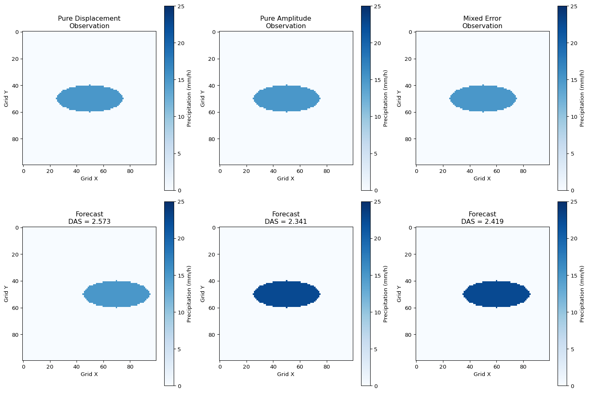

import numpy as np
import matplotlib.pyplot as plt
from scipy.ndimage import gaussian_filter
from scipy.optimize import minimize
def pyramidal_optical_flow(forecast, observation, max_search_distance=90, levels=4):
"""
Simplified pyramidal optical flow implementation
"""
ny, nx = forecast.shape
displacement_field = np.zeros((ny, nx, 2))
# Multi-scale processing
for level in range(levels):
scale_factor = 2**(levels - level - 1)
# Downsample fields
if scale_factor > 1:
f_scaled = gaussian_filter(forecast, sigma=scale_factor)[::scale_factor, ::scale_factor]
o_scaled = gaussian_filter(observation, sigma=scale_factor)[::scale_factor, ::scale_factor]
else:
f_scaled = forecast.copy()
o_scaled = observation.copy()
# Calculate displacement at this scale
level_displacement = calculate_displacement_field(
f_scaled, o_scaled, max_search_distance // scale_factor
)
# Upsample and add to total displacement
if scale_factor > 1:
level_displacement = np.repeat(np.repeat(level_displacement, scale_factor, axis=0),
scale_factor, axis=1)
level_displacement = level_displacement[:ny, :nx] * scale_factor
displacement_field += level_displacement
return displacement_field
def calculate_displacement_field(forecast, observation, max_search):
"""Calculate displacement field between two fields"""
ny, nx = forecast.shape
displacement = np.zeros((ny, nx, 2))
for i in range(ny):
for j in range(nx):
if observation[i, j] > 0: # Only calculate for precipitation areas
best_match = find_best_match(forecast, observation[i, j], i, j, max_search)
displacement[i, j] = [best_match[0] - i, best_match[1] - j]
return displacement
def find_best_match(field, target_value, center_i, center_j, max_search):
"""Find best matching location within search radius"""
ny, nx = field.shape
best_error = float('inf')
best_location = (center_i, center_j)
for di in range(-max_search, max_search + 1):
for dj in range(-max_search, max_search + 1):
i, j = center_i + di, center_j + dj
if 0 <= i < ny and 0 <= j < nx:
error = abs(field[i, j] - target_value)
if error < best_error:
best_error = error
best_location = (i, j)
return best_locationDisplacement and Amplitude Score (DAS) for Precipitation Verification
Optical Flow-Based Spatial Verification - Keil & Craig (2009)
Motivation
Modern high-resolution numerical weather prediction models forecast weather with great detail, but traditional verification suffers from the “double penalty” problem.
When convective precipitation is slightly displaced:
Traditional metrics: Poor categorical scores (many misses and false alarms)
Large RMSE: Even for correct intensity, size, and timing
Model value: Difficult to prove using gridpoint-based verification
What we need:
Separate displacement errors from amplitude errors
Account for spatial uncertainty in precipitation forecasts
Provide meaningful verification for high-resolution models
Displacement and Amplitude Score (DAS) by Keil & Craig (2009) uses optical flow techniques to quantify both location and intensity errors simultaneously.
The DAS Methodology
DAS combines distance and amplitude errors using an optical flow algorithm that morphs one field to match another:
| Component | What it measures |
|---|---|
| Displacement Error | Distance to corresponding forecast object |
| Amplitude Error | Intensity difference after morphing |
| Optical Flow | Vector field that deforms forecast to match observations |
| Pyramidal Matching | Multi-scale algorithm for robust feature matching |
Key Innovation:
Morphing in both directions: forecast→observation AND observation→forecast
Handles false alarms and missed events properly
Maximum search distance parameter controls matching range
Optical Flow Algorithm
The pyramidal image-matching algorithm computes displacement vectors by minimizing amplitude differences:
Step 1: Multi-scale Decomposition
Apply spatial filtering at multiple resolutions
Start with coarsest scale, refine progressively
Each scale contributes to final displacement field
Step 2: Vector Field Computation
\[\vec{d}(x,y) = \text{argmin}_{\vec{d}} \sum |F(x+d_x, y+d_y) - O(x,y)|^2\]
Step 3: Morphing Process
Apply displacement vectors to deform fields
Create morphed forecast: \(F'(x,y) = F(x+d_x, y+d_y)\)
Calculate residual differences after morphing
DAS Error Components
Observation Space Analysis (morphing forecast onto observation):
\[DIS_{obs}(x,y) = |\vec{d}_{obs}(x,y)|\]
\[AMP_{obs}(x,y) = \sqrt{(O(x,y) - F'(x,y))^2}\]
Forecast Space Analysis (morphing observation onto forecast):
\[DIS_{fct}(x,y) = |\vec{d}_{fct}(x,y)|\]
\[AMP_{fct}(x,y) = \sqrt{(F(x,y) - O'(x,y))^2}\]
Combined Metrics:
\[DIS = \frac{1}{n_{obs} + n_{fct}}(n_{obs} \cdot DIS_{obs} + n_{fct} \cdot DIS_{fct})\]
\[AMP = \frac{1}{n_{obs} + n_{fct}}(n_{obs} \cdot AMP_{obs} + n_{fct} \cdot AMP_{fct})\]
Final DAS Score
The displacement and amplitude components are normalized and combined:
\[DAS = \frac{DIS}{D_{max}} + \frac{AMP}{I_0}\]
Normalization Parameters:
\(D_{max}\): Maximum search distance (e.g., 360 km)
\(I_0\): Characteristic intensity (RMS of observed precipitation)
Interpretation:
DAS = 0: Perfect forecast
DAS ≈ 1: Either displacement error = \(D_{max}\) OR amplitude error = \(I_0\)
No upper limit: Combines both error types
Physical Meaning:
Displacement error of \(D_{max}\) is equivalent to amplitude error from unmatched features (miss + false alarm).
Python Implementation
DAS Calculation Functions
def apply_displacement_field(field, displacement_field):
"""Apply displacement field to morph a field"""
ny, nx = field.shape
morphed_field = np.zeros_like(field)
for i in range(ny):
for j in range(nx):
di, dj = displacement_field[i, j]
source_i = int(i - di)
source_j = int(j - dj)
if 0 <= source_i < ny and 0 <= source_j < nx:
morphed_field[i, j] = field[source_i, source_j]
return morphed_field
def calculate_das(forecast, observation, max_search_distance=90, threshold=1.0):
"""
Calculate Displacement and Amplitude Score (DAS)
"""
# Apply threshold
forecast_thresh = np.where(forecast > threshold, forecast, 0)
observation_thresh = np.where(observation > threshold, observation, 0)
# Calculate characteristic intensity
I0 = np.sqrt(np.mean(observation_thresh[observation_thresh > 0]**2))
# Observation space: morph forecast onto observation
disp_field_obs = pyramidal_optical_flow(forecast_thresh, observation_thresh, max_search_distance)
morphed_forecast = apply_displacement_field(forecast_thresh, disp_field_obs)
# Calculate errors in observation space
obs_mask = observation_thresh > 0
dis_obs = np.sqrt(np.sum(disp_field_obs**2, axis=2))
dis_obs = dis_obs * obs_mask # Only where observations exist
amp_obs = np.abs(observation_thresh - morphed_forecast) * obs_mask
# Forecast space: morph observation onto forecast
disp_field_fct = pyramidal_optical_flow(observation_thresh, forecast_thresh, max_search_distance)
morphed_observation = apply_displacement_field(observation_thresh, disp_field_fct)
# Calculate errors in forecast space
fct_mask = forecast_thresh > 0
dis_fct = np.sqrt(np.sum(disp_field_fct**2, axis=2))
dis_fct = dis_fct * fct_mask # Only where forecasts exist
amp_fct = np.abs(forecast_thresh - morphed_observation) * fct_mask
# Combine observation and forecast space errors
n_obs = np.sum(obs_mask)
n_fct = np.sum(fct_mask)
if n_obs + n_fct == 0:
return 0.0, 0.0, 0.0 # No precipitation in either field
DIS = (n_obs * np.mean(dis_obs[obs_mask]) + n_fct * np.mean(dis_fct[fct_mask])) / (n_obs + n_fct)
AMP = (n_obs * np.mean(amp_obs[obs_mask]) + n_fct * np.mean(amp_fct[fct_mask])) / (n_obs + n_fct)
# Normalize and combine
DIS_norm = DIS / max_search_distance
AMP_norm = AMP / I0 if I0 > 0 else 0
DAS = DIS_norm + AMP_norm
return DAS, DIS_norm, AMP_norm
def create_synthetic_precipitation_case(case_type="displacement", nx=100, ny=100):
"""Create synthetic test cases similar to ICP geometric cases"""
# Create base elliptical precipitation feature
y_indices, x_indices = np.ogrid[:ny, :nx]
center_y, center_x = ny//2, nx//2
# Elliptical feature (50x200 points as in paper)
a, b = 25, 10 # Semi-major and semi-minor axes
ellipse = ((x_indices - center_x)/a)**2 + ((y_indices - center_y)/b)**2 <= 1
# Create observation field
observation = np.zeros((ny, nx))
observation[ellipse] = 15.0 # 15 mm/h intensity
# Create forecast field based on case type
forecast = np.zeros((ny, nx))
if case_type == "displacement":
# Pure displacement (50 points to the right)
shifted_ellipse = ((x_indices - (center_x + 20))/a)**2 + ((y_indices - center_y)/b)**2 <= 1
forecast[shifted_ellipse] = 15.0
elif case_type == "amplitude":
# Same location, different amplitude
forecast[ellipse] = 22.5 # 50% higher intensity
elif case_type == "mixed":
# Displacement + amplitude error
shifted_ellipse = ((x_indices - (center_x + 10))/a)**2 + ((y_indices - center_y)/b)**2 <= 1
forecast[shifted_ellipse] = 22.5
return forecast, observationCreating Test Cases
# Create synthetic test cases
cases = {
"Pure Displacement": create_synthetic_precipitation_case("displacement"),
"Pure Amplitude": create_synthetic_precipitation_case("amplitude"),
"Mixed Error": create_synthetic_precipitation_case("mixed")
}
# Calculate DAS for each case
results = {}
for case_name, (forecast, observation) in cases.items():
das, dis_norm, amp_norm = calculate_das(forecast, observation, max_search_distance=50)
results[case_name] = {
'DAS': das,
'DIS/Dmax': dis_norm,
'AMP/I0': amp_norm
}
# Display results
print("=== DAS Results for Synthetic Cases ===")
print(f"{'Case':<20} {'DAS':<8} {'DIS/Dmax':<10} {'AMP/I0':<10}")
print("-" * 50)
for case_name, metrics in results.items():
print(f"{case_name:<20} {metrics['DAS']:<8.3f} {metrics['DIS/Dmax']:<10.3f} {metrics['AMP/I0']:<10.3f}")=== DAS Results for Synthetic Cases ===
Case DAS DIS/Dmax AMP/I0
--------------------------------------------------
Pure Displacement 2.573 1.623 0.950
Pure Amplitude 2.341 1.103 1.237
Mixed Error 2.419 1.187 1.232 Visualizing Test Cases
fig, axes = plt.subplots(2, 3, figsize=(15, 10))
case_names = list(cases.keys())
for i, case_name in enumerate(case_names):
forecast, observation = cases[case_name]
# Plot observation
im1 = axes[0, i].imshow(observation, cmap='Blues', vmin=0, vmax=25)
axes[0, i].set_title(f'{case_name}\nObservation')
axes[0, i].set_xlabel('Grid X')
axes[0, i].set_ylabel('Grid Y')
plt.colorbar(im1, ax=axes[0, i], label='Precipitation (mm/h)')
# Plot forecast
im2 = axes[1, i].imshow(forecast, cmap='Blues', vmin=0, vmax=25)
axes[1, i].set_title(f'Forecast\nDAS = {results[case_name]["DAS"]:.3f}')
axes[1, i].set_xlabel('Grid X')
axes[1, i].set_ylabel('Grid Y')
plt.colorbar(im2, ax=axes[1, i], label='Precipitation (mm/h)')
plt.tight_layout()
plt.show()
Real Case Application: SPC2005
The paper demonstrates DAS on real Weather Research and Forecasting (WRF) model forecasts from the 2005 Storm Prediction Center Spring Program:
Case Study: 13 May 2005
Main Issue: Squall line with underestimated north-south extension
False Alarms: Spurious precipitation in southeast
DAS Components: Large amplitude error dominates displacement error
Expert Ranking: Correctly identified as worst among three model configurations
Key Findings:
wrf4ncep: DAS = 1.38 (worst performance)
wrf4ncar: DAS = 1.12 (best performance)
wrf2caps: DAS = 1.18 (intermediate)
Comparison with Traditional Metrics:
DAS ranking agreed with expert subjective evaluation
Traditional ETS and BIAS showed less consistent ranking
DAS captured both displacement and amplitude errors effectively
Advantages and Limitations
Advantages:
Separates error types: Distinguishes displacement from amplitude errors
Handles false alarms: Proper treatment through bidirectional morphing
Scale-aware: Pyramidal algorithm works across multiple scales
Physically meaningful: Relates to meteorological feature displacement
Computationally efficient: ~10 seconds per image pair
Limitations:
Complex field matching: Difficulty with overlapping or merging features
Parameter sensitivity: Maximum search distance affects results
Interpolation errors: Small residual errors from morphing process
Ambiguity: Complex fields may have multiple valid interpretations
Single time: Does not account for temporal displacement
Comparison with Other Methods:
More comprehensive than traditional categorical scores
Complements object-based verification methods
Less intuitive than feature-based approaches for complex cases
Parameter Selection Guidelines
Maximum Search Distance (Dmax):
Should reflect dynamical scales (e.g., radius of deformation)
Typical values: 200-400 km for synoptic features
Smaller values for convective-scale verification
Too large: Everything gets matched (loses discrimination)
Too small: Valid displacements treated as false alarms
Intensity Threshold:
Remove background noise and light precipitation
Typical: 1 mm/h for precipitation verification
Should match forecast system capabilities
Affects both displacement and amplitude calculations
Characteristic Intensity (I0):
RMS of observed precipitation above threshold
Can use climatological values for consistency
Affects relative weighting of amplitude vs displacement errors
Should represent typical precipitation intensities
Operational Applications
Model Development:
Identify systematic displacement biases
Evaluate impact of model changes on spatial accuracy
Compare different physics parameterizations
Assess ensemble member diversity
Forecast Verification:
Routine assessment of high-resolution model performance
Complement traditional verification metrics
Provide spatial error characteristics
Support model ranking and selection
Research Applications:
Study predictability of different weather regimes
Evaluate ensemble perturbation strategies
Understand scale-dependent forecast errors
Develop improved verification frameworks
Future Extensions:
Multi-time analysis for temporal displacement
Application to other meteorological variables
Integration with probabilistic verification
Real-time forecast guidance systems
Key Insights from Keil & Craig (2009)
Methodological Contributions:
Optical flow adaptation: Successfully applied computer vision techniques to meteorology
Bidirectional morphing: Proper handling of false alarms and misses
Error decomposition: Meaningful separation of spatial and amplitude errors
Normalization scheme: Physically-based combination of error components
References & Resources
Primary Reference:
- Keil, C., & Craig, G. C. (2009). A displacement and amplitude score employing an optical flow technique. Weather and Forecasting, 24(5), 1297-1308.
Related Spatial Verification Methods:
Gilleland et al. (2009): Intercomparison of spatial forecast verification methods
Davis et al. (2006): Object-based verification (MODE)
Roberts & Lean (2008): Fractions Skill Score (FSS)
Ebert & McBride (2000): Contiguous rain area analysis
Technical Background: - Zinner et al. (2008): Pyramidal image matching algorithm
Marzban et al. (2008): Alternative optical flow applications
Ahijevych et al. (2009): Spatial Verification Methods ICP
Applications:
Kain et al. (2008): SPC2005 Spring Program
Various ensemble verification studies
Operational model evaluation systems